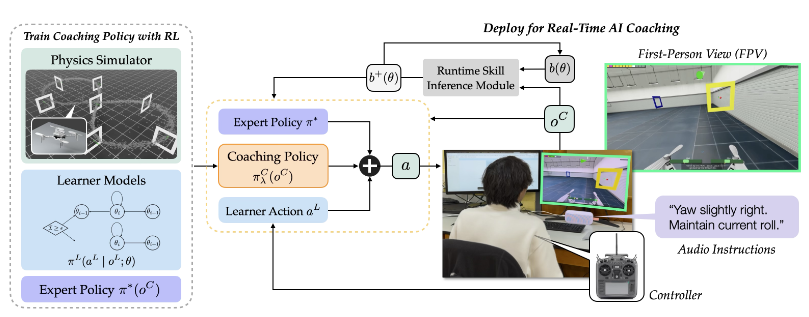
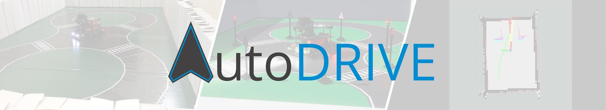

Research Background
From an AI that drives for us to an AI that helps us learn to drive.대신 운전해 주는 AI에서, 스스로 운전하는 법을 익히도록 돕는 AI로.
1. What Is AI Coaching?
AI Coaching asks a different question from conventional driving assistance: not just whether AI can improve performance now, but whether its help leaves the person more capable afterwards. Wang et al. call their reinforcement-learning framework Learning to Coach (L2C).[1]AI Coaching은 AI가 당장의 수행 결과를 개선하는 데 그치지 않고, 사람이 나중에 도움 없이도 더 잘할 수 있도록 돕는 연구입니다. Wang 등의 논문은 이를 위한 강화학습 기반 프레임워크를 Learning to Coach(L2C)라고 부릅니다.[1]
Too much help can remove opportunities to practice. Withdrawing help too early can instead lead to repeated, unproductive failures. The coach therefore learns when to assist and when to leave room for the learner to act.[1]AI가 모든 실수를 대신 바로잡으면 학습자가 직접 연습할 기회가 줄어듭니다. 반대로 너무 일찍 도움을 끊으면 같은 실패만 반복할 수 있습니다. 따라서 코치는 언제 도와주고, 언제 학습자가 직접 시도하도록 맡길지를 판단해야 합니다.[1]

2. How Learning to Coach Works
Expert Policy
A pretrained expert provides a competent action. This separates knowing how to perform the task from deciding how much help the learner needs.미리 학습한 Expert policy가 기준 조작을 제시합니다. 과제를 잘 수행하는 능력과 학습자에게 얼마나 개입할지를 결정하는 능력을 분리한 구조입니다.
Adaptive Shared Control
The coach blends learner and expert actions with an assistance weight for each control axis. The weight responds to the physical state and learner behavior.Shared control은 학습자의 입력과 전문가의 조작을 혼합하는 방식입니다. 코치는 현재 상황과 학습자의 행동에 따라 제어 축별 개입 비율을 조절합니다.
Learner Model
Training combines a skill-dependent action model with probabilistic skill changes after success or failure. These are modeling assumptions, not direct measurements of human learning.학습 시에는 숙련도에 따른 행동 모델과 성공·실패 이후 숙련도가 변하는 확률 모델을 사용합니다. 사람의 학습 과정을 직접 측정한 값이 아니라, 코치 학습을 위한 모델입니다.
Runtime Skill Inference
During use, skill is hidden. In the drone experiment, the system updates a skill estimate for each gate segment from its passage time, then adapts assistance.실제 사용 중에는 숙련도를 직접 알 수 없습니다. 드론 실험에서는 게이트 구간별 통과 시간을 바탕으로 숙련도를 추정하고, 그에 맞춰 도움의 정도를 조절합니다.
For each control axis, the executed action is a weighted blend: a = λ × a_expert + (1 − λ) × a_human. At λ = 0 the learner has full control; at λ = 1 the expert supplies that axis. Intermediate values allow shared control.[1]각 제어 축의 적용값은 a = λ × a_expert + (1 − λ) × a_human으로 계산합니다. λ가 0이면 학습자의 입력만, 1이면 전문가의 조작만 적용됩니다. 그 사이에서는 두 입력을 섞어 제어합니다.[1]
The learning objective is Value of Independence: how well the learner could perform without the coach. L2C trains the assistance policy with PPO using changes in simulated skill as a practical training reward. The drone implementation also provides visual cues and spoken guidance.[1]학습 목표는 코치 없이도 얼마나 잘 수행할 수 있는지를 뜻하는 Value of Independence입니다. L2C는 시뮬레이션에서의 숙련도 변화를 학습 보상으로 삼아 PPO로 개입 정책을 학습합니다. 드론 실험에서는 제어 개입과 함께 시각적 안내와 음성 피드백도 제공합니다.[1]
Core Equations & Terms
Shared-control rule (paper Eq. 2). Each control axis has its own weight: 0 preserves the learner action, 1 replaces it with the expert action. The coach learns the weight, rather than learning the entire driving command from scratch.[1]논문의 공유 제어 식(Eq. 2)입니다. 제어 축마다 개입 비율을 따로 정하며, 0이면 학습자 입력을 유지하고 1이면 전문가 입력으로 대체합니다. 코치는 주행 명령 전체를 새로 만드는 대신, 전문가의 도움을 얼마나 적용할지를 학습합니다.[1]
| Symbol / term | Meaning | F1TENTH interpretation |
|---|---|---|
| aᴸ · Learner action | Input chosen by the learner.학습자가 직접 선택한 입력입니다. | Human steering and pedal inputs, after an explicit action conversion.사용자 조향·페달 입력을 제어 명령으로 변환한 값입니다. |
| π* · Expert policy | A competent reference policy.과제를 능숙하게 수행하는 기준 정책입니다. | PP is the current steering/speed reference, not a learned coach.현재 PP는 조향·속도의 기준입니다. 학습된 코치 자체는 아닙니다. |
| oᶜ · Observation | State and learner behavior available to the coach.코치가 확인할 수 있는 환경과 학습자의 행동입니다. | Candidate inputs include speed, path position, steering error and segment history.속도, 경로상 위치, 조향 차이, 구간별 이력 등을 코칭 입력으로 검토합니다. |
| λ ∈ [0, 1] · Assistance | A separate blending weight for each action axis.제어 축별로 설정하는 개입 비율입니다. | Future steering and longitudinal assistance must have defined units and authority.향후 조향·속도 개입의 단위와 제어 권한을 먼저 정의해야 합니다. |
| ⊙ · Element-wise product | Multiply matching components, not a matrix product.각 축의 대응하는 성분끼리 곱한다는 뜻입니다. | Steering is blended with steering, not with a speed or pedal value.조향은 조향끼리 혼합합니다. 속도나 페달값과 직접 섞지 않습니다. |
| θ · Skill | Latent proficiency in the learner model.학습자 모델의 숨겨진 숙련도입니다. | Not a recorded sensor value; inference requires calibrated driving evidence.센서로 직접 측정하는 값이 아닙니다. 주행 자료를 이용한 추정·보정이 필요합니다. |
| b(θ) · Skill belief | A probability distribution over possible skill levels.가능한 숙련도 수준별 확률 분포입니다. | A future segment-level estimate should retain uncertainty.향후 구간별 숙련도를 추정할 때 불확실성도 함께 다룹니다. |
Bayesian observation update: combine the prior belief with how likely the new observation is at each skill level, then normalize. The paper uses gate-passage times. Driving would require its own likelihood calibration; a slow corner can reflect caution rather than poor skill.[1]기존 숙련도 추정에 새 관측이 각 숙련도에서 나타날 가능성을 반영한 뒤, 전체 확률을 정규화합니다. 논문은 게이트 통과 시간을 이용합니다. 차량에서는 코너를 천천히 통과한 이유가 실력 부족인지 안전을 위한 감속인지 구분할 수 있도록 별도로 보정해야 합니다.[1]
Condensed notation for paper Eq. 1: evaluate expected future task rewards without assistance. s is the physical state, γ the discount factor and rᵗᵃˢᵏ the task reward. This is a learning objective, not a lap-time formula.[1]논문 Eq. 1을 간략히 표시한 식입니다. s는 환경 상태, γ는 먼 미래의 보상에 적용하는 할인율, rᵗᵃˢᵏ는 과제 수행 보상입니다. AI 없이 계속 수행할 때 기대되는 성과를 평가하므로, 단순한 랩타임 계산식과는 다릅니다.[1]
L2C uses simulated skill improvement as a practical PPO training reward. Actual learner skill is not directly available at deployment. Transferring this idea requires a validated learner model, not simply rewarding a faster assisted lap.[1]L2C는 시뮬레이션상의 숙련도 증가량을 PPO 학습 보상으로 사용합니다. 실제 학습자의 숙련도는 직접 알 수 없으므로, 이를 차량에 적용하려면 학습자 모델을 검증해야 합니다. 보조 중 랩타임이 짧아졌다는 이유만으로 이 보상을 대신할 수는 없습니다.[1]
3. What the Paper Evaluated
The study used an FPV drone-racing simulator with 33 participants, split into three groups of 11. Each participant completed pre-training and post-training tests of two laps each, with up to 15 training laps in between. Participants controlled yaw and roll; pitch and thrust were automated.[1]논문은 FPV 드론 레이싱 시뮬레이터에서 33명을 대상으로 실험했습니다. 참가자는 11명씩 세 그룹으로 나뉘어 사전·사후 평가를 각각 2랩씩 수행하고, 그 사이에 최대 15랩을 훈련했습니다. 참가자는 yaw와 roll을 조작했으며 pitch와 thrust는 자동 제어했습니다.[1]
| Method | Assistance strategy | Mean lap-time reduction |
|---|---|---|
| L2C | Learned, skill- and context-dependent assistance숙련도와 상황에 따라 학습된 정책으로 개입 | 27.9% |
| RBF | Rule-based reduction of assistance정해진 규칙에 따라 보조 수준을 낮춤 | 11.3% |
| MIA | Minimal correction for safety and task completion안전과 과제 수행에 필요한 만큼만 조작을 수정 | 6.2% |
These are the paper’s reported pre-to-post changes, not F1TENTH results. L2C showed significant within-group improvements in both lap time and failures. However, the adjusted between-group comparisons reported p-values of 0.09–0.16; the larger mean gains should not be described as statistically conclusive superiority.[1]위 수치는 논문에서 보고한 훈련 전후 변화이며 F1TENTH 실험 결과가 아닙니다. L2C 그룹에서는 랩타임과 실패 횟수가 모두 통계적으로 유의하게 개선됐습니다. 다만 그룹 간 비교의 보정된 p값은 0.09~0.16이므로, 평균 개선 폭이 크다는 사실을 통계적으로 확정된 우위로 해석해서는 안 됩니다.[1]

4. Why AutoDRIVE?

AutoDRIVE Simulator runs on the Unity engine. This project extends the simulator with tools for driving-coaching research.[2][3]AutoDRIVE Simulator는 Unity 엔진으로 구현되어 있습니다. 본 프로젝트는 이 시뮬레이터에 주행 코칭 연구를 위한 기능을 추가합니다.[2][3]

Simulation Side
The left side groups the vehicle, sensors, chassis, actuators and infrastructure. Unity provides the simulation engine; these modules expose a virtual driving environment to algorithms.왼쪽은 차량, 센서, 차체, 구동기와 실험 환경으로 구성됩니다. Unity가 시뮬레이션 엔진을 제공하고, 각 요소를 외부 알고리즘에서 사용할 수 있는 가상 주행 환경으로 구성합니다.
Bridge & Software
The bridge transfers observations outward and control commands back. The right side separates perception, planning and control; the wider ecosystem also includes smart-city software.Bridge는 관측 데이터를 외부 소프트웨어로 보내고, 제어 명령을 받아 시뮬레이터에 전달합니다. 오른쪽은 인지·계획·제어 소프트웨어로 나뉘며, 플랫폼 전체에는 스마트시티 관련 소프트웨어도 포함됩니다.
Here the external control path supplies manual or PP commands, while the telemetry path feeds recording, dashboard and replay. The diagram describes the wider AutoDRIVE ecosystem—not a claim that this project implements every module or uses every listed tool.본 프로젝트에서는 외부 제어 경로로 사용자 또는 PP 명령을 전달하고, 수신한 데이터를 기록·대시보드·리플레이에 연결합니다. 구성도는 AutoDRIVE 전체 생태계를 설명하며, 본 프로젝트가 그림의 모든 모듈과 도구를 구현·사용한다는 뜻은 아닙니다.
AutoDRIVE is an autonomous-driving research and education platform developed by Tinker Twins and collaborators. Its three parts cover algorithm development, simulation and physical testing.[2][3]AutoDRIVE는 Tinker Twins와 공동 연구진이 개발한 자율주행 연구·교육 플랫폼입니다. 알고리즘 개발부터 시뮬레이션, 실제 하드웨어 시험까지 연결할 수 있도록 구성되어 있습니다.[2][3]
| Component | Role |
|---|---|
| Simulator | A Unity-based environment for testing vehicle behavior and control algorithms.Unity 기반 가상 환경에서 차량의 움직임과 제어 알고리즘을 시험합니다. |
| Devkit | APIs and development tools that connect algorithms to the simulator or testbed.알고리즘을 Simulator 또는 Testbed와 연결하는 API와 개발 도구를 제공합니다. |
| Testbed | Physical vehicles and infrastructure for real-world validation.실제 차량과 실험 시설을 이용해 현실 환경에서 검증합니다. |
See Simulation & PP Expert for the built-in side panels and driving controls.기본 양측 패널과 주행 조작 방법은 Simulation & PP Expert 페이지에서 자세히 설명합니다.
This project uses the Simulator as its foundation, with vehicle control and telemetry connected to external software. The underlying simulator is AutoDRIVE; the experiment-session workflow, dashboard, overlay and Replay Studio are project additions. Physical Testbed transfer has not been evaluated here.[3][5]본 프로젝트는 Simulator를 기반으로 외부 프로그램에서 차량을 제어하고 주행 데이터를 수집합니다. 차량과 가상 환경을 제공하는 기반은 AutoDRIVE이며, 실험 세션 관리·대시보드·오버레이·Replay Studio는 본 프로젝트에서 추가한 기능입니다. 실제 Testbed로의 적용은 아직 검증하지 않았습니다.[3][5]
5. From Drone Coaching to Driving Research
The research direction is to adapt learning-oriented assistance to steering, speed choice and pedal timing on the ground. A corner, for example, requires a sequence of decisions: when to slow down, how much to steer and when to accelerate again.본 연구는 학습을 돕는 AI 개입이라는 관점을 차량의 조향·속도 조절·페달 조작에 적용하려 합니다. 예를 들어 코너에서는 감속 시점, 조향량, 다시 가속하는 시점을 연속적으로 판단해야 합니다.
The first step is therefore an observable experiment environment. We record human inputs, PP references and applied commands separately, then compare speed and steering by segment. These observations will guide coaching-reference construction and future pedal recommendations.[5]이를 위해 먼저 운전자의 조작을 기록하고 비교할 수 있는 실험 환경을 구축했습니다. 사용자 입력, PP 기준값, 차량에 적용한 명령을 구분해 기록하고 구간별 속도와 조향을 분석합니다. 이 데이터를 바탕으로 코칭 기준과 향후 페달 조작 추천을 설계할 계획입니다.[5]